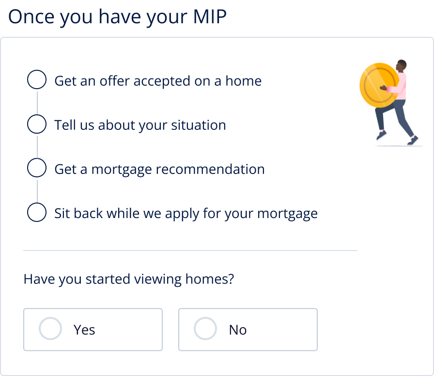
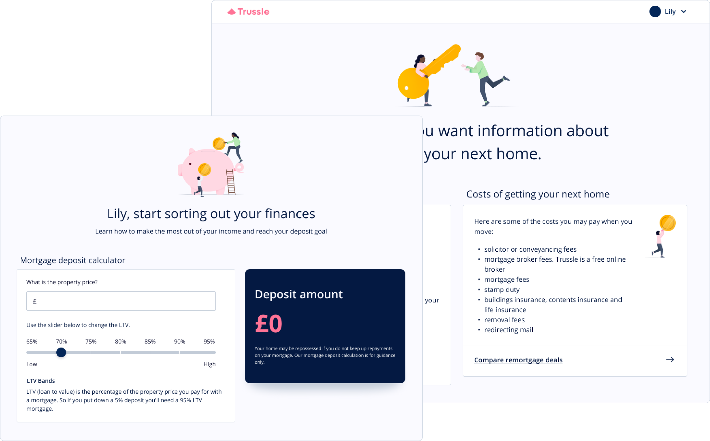
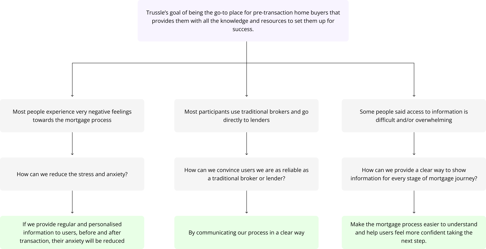
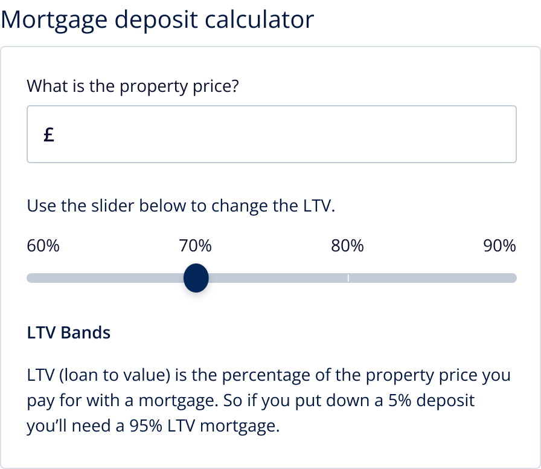
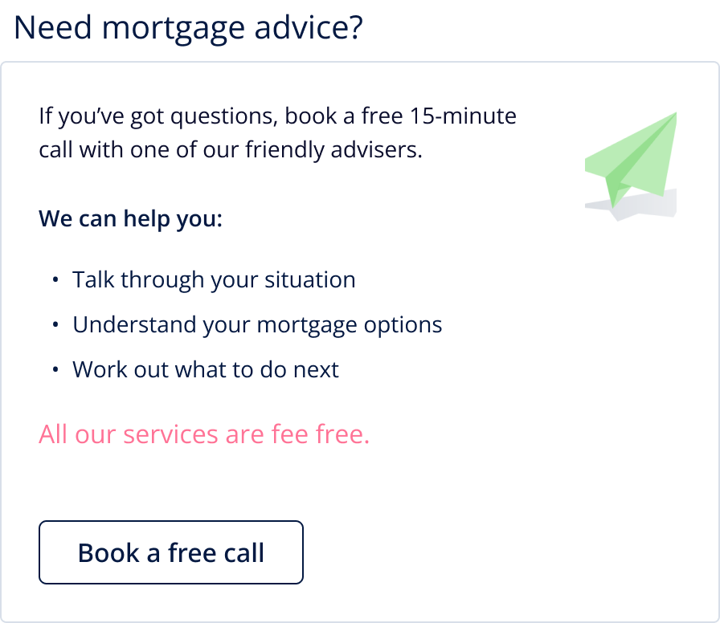
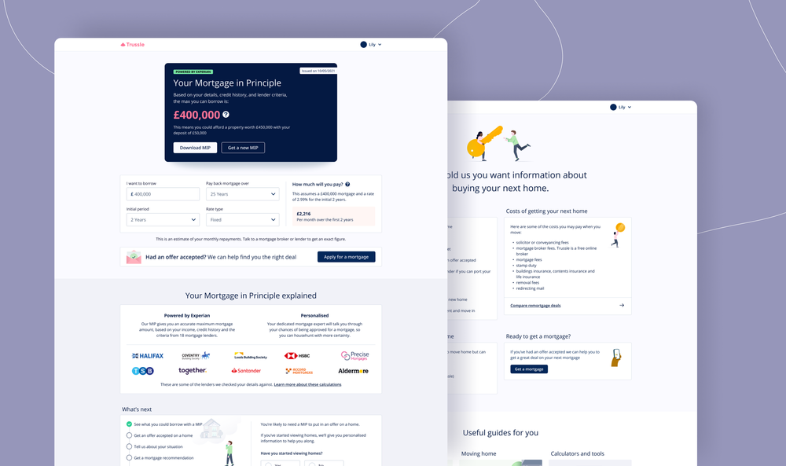
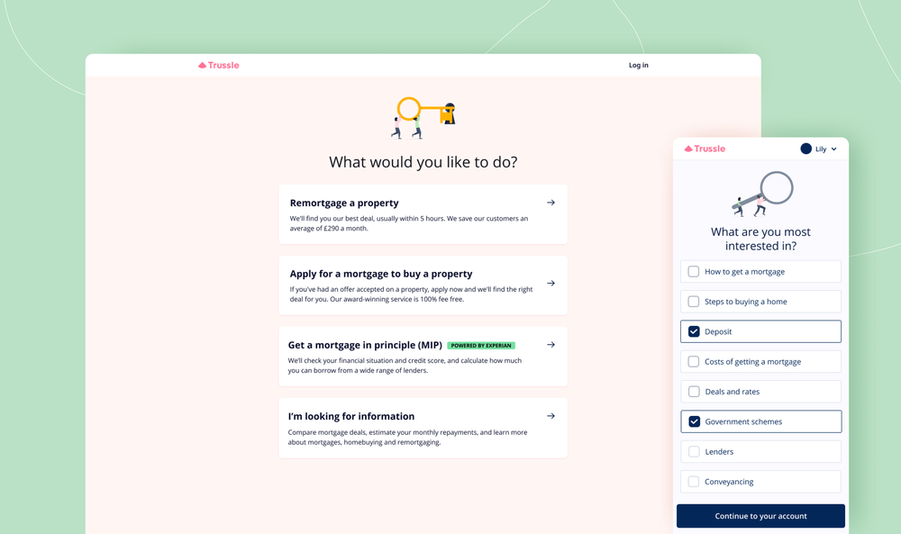

Guidance
Information tailored to the user’s stage in the mortgage journey.
Example: tailored content and checklists based on their buying stage.

Overview
Many people were visiting Trussle while they were still researching, but the experience was mainly designed around users ready to start a mortgage journey.
The opportunity was to support people earlier, helping them understand their options, work towards their financial goals and build confidence before applying.
The Mortgage Hub gave users useful reasons to stay connected with Trussle until they were ready to move forward.
Research
We surveyed 260 people in the UK to understand how people felt about getting a mortgage, how confident they were, where they looked for information and what tools they used.
47.1%
of first-time buyers buying within six months lacked confidence in the mortgage process.
83.8%
used friends and family for mortgage information, while 79.4% relied on online search.
86.8%
weren’t using any tools to organise or keep track of their mortgage journey.
Hypothesis
The research showed a clear gap: people were trying to understand the mortgage process, but many lacked confidence and had no simple way to organise or track what they needed to do.
Trussle saw an opportunity to be one of the first mortgage providers to offer a dedicated tool for people before they were ready to apply, supporting anyone starting to explore the mortgage process.
I grouped the findings into opportunity areas and co-facilitated a workshop with the wider team. We used the research to generate hypotheses and prioritise the ideas that could form the first version of the Mortgage Hub.

Product direction
I translated the research into a focused MVP built around three areas.

Information tailored to the user’s stage in the mortgage journey.
Example: tailored content and checklists based on their buying stage.

Practical ways to understand affordability and eligibility.
Example: deposit calculator, Mortgage in Principle and other interactive tools.

Clear ways to get more support or move into the mortgage journey.
Example: book a free call with an adviser or continue into the application when ready.
Design
I used the user’s stage and intent to shape what appeared in the Hub, so the experience could feel relevant without becoming overwhelming.
The interface combined practical tools, explanatory content and clear next steps in the same place, reducing the need for users to search across different parts of the site.
I also kept adviser support visible throughout the experience, so users could move from self-service to human help when they needed it.


Learnings
The Mortgage Hub showed that supporting users before they were ready to apply wasn’t only about creating new tools and content.
The same problem appeared in the Start Page: users often arrived looking for information but were pushed towards a transactional journey before they understood what would happen next.
This made it clear that the experience needed to recognise different levels of intent much earlier, including from the homepage, and give users clearer routes depending on whether they were ready to act or still exploring.